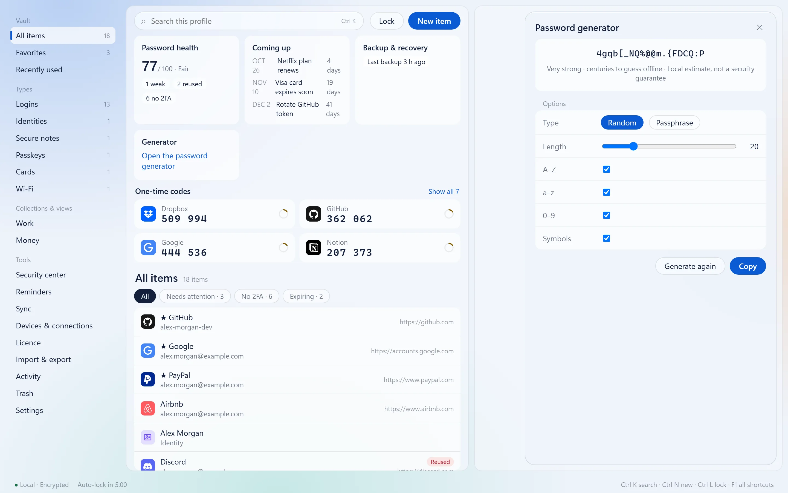

Ihre Passwörter. Ihre Geräte. Kein Konto.
Ein Passwortmanager, der Ihren Tresor auf Ihrem PC, Mac und Telefon hält und über Ihr eigenes WLAN oder Ihren Cloud-Ordner synchronisiert. Kostenlos bis 7 Einträge. Pro kostet einmalig US$29.99, und jedes Update bleibt für immer kostenlos.
- WindowsMicrosoft Store
- MacMac App Store
- iPhoneApp Store
- AndroidDemnächst
Gratis für bis zu 7 Einträge. Pro kostet US$29.99 einmalig, ohne Abo.
Browser-Erweiterung Zu Edge hinzufügen Zu Chrome hinzufügen Zu Firefox hinzufügen Alle Downloads ansehen
- Kein Konto
- Kein LocalGateKeys-Server
- Keine Telemetrie
Die App
Windows
Microsoft Store



Mac
Mac App Store


iPhone
App Store


iPad
App Store


Android
Demnächst


Demo-Tresore mit erfundenen Konten. Mit den Pfeilen sehen Sie mehr.
Sie entscheiden, wohin verschlüsselte Kopien gehen
Jedes Gerät behält seinen eigenen verschlüsselten Tresor. Nichts verlässt ein Gerät, wenn Sie es nicht einrichten. Die Synchronisierung zwischen Ihrem PC und iPhone gehört zu Pro.
-
Nirgendwohin
Standard in jeder EditionDer Tresor bleibt auf Ihrem Gerät. Geplante Backups sind verschlüsselte Dateien, die Sie ablegen, wo Sie möchten, auch auf einem USB-Stick oder in einem Sync-Ordner.
-
Ihr WLAN zu Hause
ProKoppeln Sie Ihren PC und Ihr iPhone einmal mit einem Einmal-QR-Code. Sind sie im selben Netzwerk und entsperrt, synchronisieren sie direkt miteinander über eine verschlüsselte Verbindung. Eine Internetverbindung ist nicht beteiligt.
-
Ihr eigener Cloud-Ordner
Pro, wenn Sie es einschaltenRichten Sie die Synchronisierung auf einen Cloud-Ordner, den Sie bereits nutzen, etwa Dropbox oder iCloud Drive, geschützt durch ein Sync-Passwort. Ihr Cloud-Anbieter speichert verschlüsselte Dateien, die er nicht lesen kann. Wir sind überhaupt nicht beteiligt.
Was es täglich für Sie tut
-
Füllt Anmeldungen in Chrome und Edge aus
Die Browser-Erweiterung spricht über einen kleinen lokalen Helfer mit der LocalGateKeys-App auf Ihrem PC. Sie bietet nur Logins an, die für genau die aktuelle Website gespeichert sind. Sie füllt auch Zwei-Faktor-Codes, Adressen und Zahlungskarten aus und bietet an, neue Logins nach der Anmeldung zu speichern.
Auch Passkeys funktionieren: Eine Website kann einen Passkey in Ihrem Tresor speichern und Sie damit anmelden, und Sie bestätigen jeden in der Desktop-App.
Die Erweiterung erhält nie Ihren gesamten Tresor, und keine Anfrage verlässt Ihren Computer.
-
Und in Windows-Apps
Das Ausfüllen in Desktop-Apps funktioniert mit Anmeldefenstern von Windows-Programmen wie Spiele-Launchern. Sie verknüpfen ein Fenster einmal; danach füllt eine Ausfüllschaltfläche neben dem Passwortfeld oder eine Tastenkombination die gespeicherten Felder aus.
Es liest nur die Barrierefreiheitsinformationen, die Windows über ein Fenster bereitstellt. Es zeichnet nie Ihre Tastenanschläge auf, schleust nie Code in ein anderes Programm ein und lehnt das Ausfüllen ab, wenn sich App oder Fenster geändert haben.
-
Zwei-Faktor-Codes integriert Pro
Speichern Sie den Zwei-Faktor-Einrichtungsschlüssel einer Website mit ihrem Login, und der aktuelle Code erscheint oben im Login und auf der Karte „Einmalcodes“ auf der Startseite. Scannen Sie den QR-Code der Website aus einem Screenshot oder mit Ihrer Webcam, oder übernehmen Sie Codes aus Google Authenticator. Auf dem iPhone können Sie die Codes, die Sie auswählen, auf Ihrer Apple Watch anzeigen.
Die Codes werden auf Ihren eigenen Geräten berechnet. Zwei-Faktor-Codes gehören zu Pro.
-
Prüft Ihre Passwörter
Der Generator erzeugt starke Passwörter oder Passphrasen. Der Passwort-Zustand zeigt, welche gespeicherten Passwörter schwach, mehrfach verwendet, alt sind oder keinen Zwei-Faktor-Code haben, und die iPhone-App bewertet dieselbe Prüfung mit einer Punktzahl. Wenn Sie sie einschalten, vergleicht eine von Ihnen gestartete Prüfung auf Datenlecks sie mit bekannten Datenlecks und sendet nur fünf Zeichen eines Hashes.
-
Auch auf Ihrem iPhone
Die iPhone-App füllt Logins in Safari und anderen Apps aus, ab iOS 18 auch Karten und Identitäten in jedem Textfeld. Sie bietet eine Sicherheitsprüfung, Passwortverlauf, Ablauferinnerungen und Zuletzt gelöscht mit Widerrufen und öffnet sich mit Face ID, Touch ID oder einem optionalen App-Passwort.
Sie synchronisiert mit Ihrem PC, und wer Pro auf dem iPhone kauft, schaltet auch Windows frei.
-
Einen Eintrag sicher teilen
Senden Sie einen Login oder eine Notiz als Datei oder QR-Code, gesichert mit einem Code aus sechs Wörtern, den Sie der anderen Person auf anderem Weg mitteilen, etwa per Telefon.
Er lässt sich nur einmal öffnen, und drei falsche Codes zerstören ihn.
Kostenlos für Ihre ersten 7 Einträge
Free bietet Ausfüllen im Browser und in der Windows-App, Passkeys, Windows Hello, eine Wiederherstellungsphrase, sicheres Teilen, Importe und geplante verschlüsselte Backups, für bis zu 7 Einträge ohne zeitliche Begrenzung. Pro ergänzt unbegrenzte Einträge, Synchronisierung, Zwei-Faktor-Codes (auch auf der Apple Watch) und Dokumente.
LocalGateKeys Pro
US$29.99, einmalig.
Eine Zahlung. Jedes Update, für immer, kostenlos. Kein Abo.
Ehrlich bei der Sicherheit
Der Tresor nutzt Argon2id und AES-256-GCM, und der Entwurf ist in verständlichen Worten beschrieben, einschließlich dessen, wogegen er nicht schützt.
- Master-Passwort zu Schlüssel
- Argon2id
- Tresor-Verschlüsselung
- AES-256-GCM
- Konto erforderlich
- Keines
- Wo der Tresor liegt
- Ihre Geräte